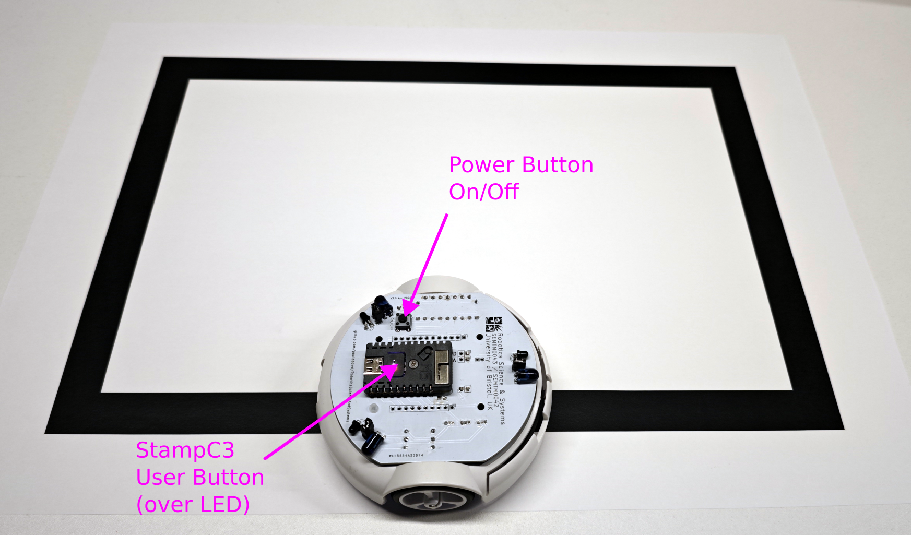

For this coursework, you will program the StampC3 controller. The Pololu 3Pi+ runs supplied middleware that operates its motors and sensors; the StampC3 requests sensor information and sends motor commands.
02
Development environment · hardware
Install and Configure the Arduino IDE
20–30 min
We will use the Arduino framework to program the StampC3. Arduino IDE is the core editor, compiler, and upload tool for the supplied robot program. We will also install some software libraries to operate some sensors on the robot.
In Preferences, add M5Stack's Board Manager URL by copying-and-pasting the following line into the blank text input area:
Whilst the Preferences window is open, tick the checkbox Display Line Numbers. Close the preferences window by clicking "OK".
Select Tools → Board → Board Manager... . In Board Manager, type StampC3 into the blank text input area, wait for the list to update. Click "install" on the entry for the M5Stack board package. This is a large package and may take some time to download and install. Once installed, click "close".
Install Libraries: We also require two library packages to operate the IMU sensor on board the Pololu 3Pi+ robot. These are LIS3MDL and LSM6.
Select Sketch → Include Library → Manage Libraries.
In the search field, enter LIS3MDL, wait for the list panel to update. Find the library named "lis3mdl" and click install.
In the search field, enter LIS3MDL, wait for the list panel to update. Find the library named "lsm6" and click install.
Click close to finish installing libraries.
Check M5StampC3 is selectedSet USB-CDC On BootKeep setup errors
03
Physical robot · recoverable baseline
Prepare a Copy of the StampC3 Template
10–15 min
Your supplied local course workspace contains StampC3_Template, DigitalTwin, and investigations. Preserve the supplied template as a known-working recovery point before changing code.
Workspace checklist
Copy the complete StampC3_Template folder to a new location on your computer. It is best to decide a location on your computer storage where you will collect together all your work for this course. We will refer to this as your working directory.
Rename the copied folder and its main .ino file to the same meaningful name, such as DemonstrationTest.
Open the copied .ino file in Arduino IDE.
We are going to make a small change so that you will be able to connect to your robot over WiFi to run the digital twin demonstration. At the top of the opened file, you will see the line of code:
RobotWifiAP_c server("myAP", "myPassword", 80);
Edit myAP to a new unique name and set myPassword to a password. In this case, we simply set a password to limit the access to your robot to you. You will only use this password to connect your computer to this robot.
Finally, click the tick icon to compile the code. If nothing else has changed, the code should compile without any errors. In the black box area at the bottom of the Arduino IDE, you should see a message logged like:
Sketch uses 986377 bytes (75%) of program storage space. Maximum is 1310720 bytes.
Global variables use 38092 bytes (11%) of dynamic memory, leaving 289588 bytes for local variables. Maximum is 327680 bytes.
Copy the complete templateRename folder and .ino togetherKeep the original unchanged
04
Physical robot · known baseline
Upload to the StampC3
20–30 min
In this step we will upload the code edited in the previous exercise to the StampC3. This is an activity you will do very frequently in this course. You will need to upload code to the StampC3 every time you wish to change the robot behaviour. You will need to connect your computer to the StampC3 via a USB-C cable.
There are some common questions about this upload process:
When does my code run? When you upload code to the StampC3, it will activate straight away and then run this code forever, until new code is uploaded. The current code completes some setup activities, and will then wait for you to press the button.
How can I stop my code from running, or pause it? When code has been uploaded, there is no dedicated physical interface (e.g. a button) to stop the code from running. If you want this behaviour, you will need to write the code to achieve it. The StampC3 does have one general purpose button available.
Can I get my code back off the StampC3?: No, you should regard this as a write-only process. Technically, it is possible to recover the machine code and to try to translate this back into a human-readable format. However, this is very difficult. Instead, you should maintain versions of your code and keep duplicated back-ups.
Upload Steps
Connect the StampC3 to your computer by using a USB-C cable.
Make sure that the correct board is connected: Select Tools → Board → M5Stack Arduino → StampC3
Change Upload Speed to 115200
Configure the Arduino IDE to connect to the correct Serial Port. Select Tools → Port → and then the available port.
On Windows, this is likely to be something like COM5, or the highest enumeration.
On MacOS, this is likely to be something like /dev/cu.usbmodem or /dev/cu.usbserial.
On a Linux OS, this is likely to be /dev/ttyACM0 or /dev/TTYUSB0.
Edit your copied sketchCompile in Arduino IDERecord the upload result
05
Beginner support
Learning by Modifying, Exploring and Playing
Time to be confirmed
This exercise is intended to help anyone very new to programming, or who needs a refresher for programming in C/C++. In this exercise, we will start with some very simple example code that flashes an LED between colours. We will start by making some very simple modifications to establish how changing code can help us to understand how it operates, as well as how to find out more information.
As you progress, you are encouraged to explore and make up your own modifications. If you encouunter an error message, see if you can work out what it means. Remember that, if something goes wrong, you can also change the code back again.
Exercises:
Start within the StampC3_Template code. Within the top-level file StampC3_Template.ino (the first tab in the Arduino IDE), replace the existing loop code:
void loop() {
// Accept or maintain the optional Processing telemetry connection. The
// controller continues to run even when no client is connected.
server.update();
// Run an iteration of the robot controller code.
// You shoul develop further code within Controller.h
controller.update(robot, server);
}
Compile and upload the adjusted code to the StampC3.
Reading the code, how long (how much time) does the StampC3 light flash for? How much time is the light on for in total?
For most commands coloured orange in the Arduino IDE, you can read about how they operate in the Arduino Reference (for example, delay()).
Reading the lines robot.setLED(...), what does each of the numbers between the brackets mean or determine? Quick comments in C/C++ code can be made by using the characters //.
Here, by reading the comments and the lines of code, you can probably infer what each of the numbers mean.
The function setLED() can be identified as a member of robot, because it is written after the dot (.) operator. This also provides a clue about where to find more information on the numbers used as arguments (inputs) to the function. You can find the code for this function within Robot.cpp. Don't worry if you cannot understand the code in Robot.cpp at the moment - it is good to simply explore the code.
A .cpp will contain the implementation code, whilst a .h file will contain the interface code. That means, a quick way to find out what else can be done with Robot.cpp is to review the list of functions within Robot.h. It is worthwhile to think of this like a book, the .h file is the contents page or index.
Try changing the numbers within robot.setLED(...);. To see what happens, you will need to compile and upload the code to the StampC3 again. Does the light on the StampC3 change as you'd expect?

The line of code bool button_state = robot.isButtonPressed(); can be read from right-to-left to understand what it does:
isButtonPressed() is a function to check if the button on the StampC3 has been pressed. Importantly, the empty brackets () mean that the function does not require any input parameters or data.
robot.isButtonPressed() tells us that the function is buttonPressed() is a member (can be found within) robot.
= robot.isButtonPressed() tells us that the function robot.isButtonPressed() is expected to return some data. The = is called the assignment operator - it takes data from one place and assigns it to another. It is not an equivalence operator, it is not checking if something is equal. In our current right-to-left reading, we still don't know what data the function is providing (called, returning).
bool button_pressed is a declaration of a variable. In this case, because we also have = robot.isButtonPressed(), we would also say that the variable has been initialised (given a value, in this case returned from the function).
bool is the data type. We can think of variables a bit like buckets to contain data. In C/C++, variables are given an explicit type, which you can think of as determining the size and shape of the bucket. In computer terms, the data type is a definition of how much computer memory is used. Different data types will occupy different amounts of memory. This is especially important when we work with embedded systems (microcontrollers, microprocessors) because they typically have a very limited quantity of memory available compared to desktop computers. In this coursework, you should find that the StampC3 has enough memory - so you do not need to be especially worried about it. In the Arduino language, the set of data types available to you are listed in the language reference.
button_pressed is the name given to the variable, which is then used to access the variable. Thinking about the above, if we can create buckets to store data, we need to give them names to keep track of them.
Use the Arduino Language Reference to find out what values are represented by the bool data type.
Use the Arduino Language Reference to find out how much memory a bool occupies. This might surprise you - why?
Whilst the StampC3 is on, try holding down the button. You should find that the robot makes a beep sound, but not very often. If you press the button momentarily (press it once, quickly), you'll likely find that it does not produce any beep. Why might this be?
Hint: Generally speaking, code within a function is run from top to bottom, line by line. What is the sequence of lines of code within loop()?
Modify the example code so that the LED flashes only when the button is held down.
Hint: The line of code if( button_pressed == true ) is called a conditional statement. This line asks the computer to check if the condition is true - in this case, the condition is button_pressed == true. After this, the curly-braces { }encapsulate all the code that should be run if the condition evaulates as true.
Once you have achieved this, invert the logic. Modify the code so that the LED flashes only when the button is not pressed. There are several was to achieve this.
06
Beginner support · placeholder
Error Messages are your Friends
Time to be confirmed
When learning to write code, error messages can be scary and frustrating. Often, error messages seem cryptic and not helpful. In robotics, we have a more significant and frustrating problem: when there are no error messages.
Consider this: you feel good about your code, and it compiles without any errors. You upload your code to your robot. You watch your robot operating for 1 minute, but then it does something unexpected and strange. When you reset your robot to try it again, it works fine with no problems. However, now you've lost confidence in your code. So you reset your robot and try it again - this time, it also does something unexpected. At this point, you definitely have a problem, but you don't have any clues about where to start looking for the problem. If only there was an error message!
It is still true that error messages can be cryptic and confusing. However, over time and with practice you will start to recognise what causes error messages, and you will learn the patterns. By solving error messages, you will develop a much deeper understanding of computer code. In fact, debugging code (diagnosing problems, finding solutions) is probably one of the most defining aspects of skill between programmers. A really good programmer writes code and catches bugs before they even compile or run the code.
When writing code, it is extremely like that a significant problem can be introduced that doesn't get recognised as an error by the compiler. These are generally called bugs. This is the same issue as the example of the unreliable robot above - it will seem like your code should work, but for some reason it behaves unexpectedly and without an error message. The skill of solving bugs depends upon your exposure and practice solving error messages.
Presently, Generative AI has shown itself to be exceptionally good at generating source code - often without errors. However, the responsibility for whether or not code is safe and reliable rests with us - people operating the AI. It is therefore still an extremely valuable skill to be able to spot patterns and recognise errors. In this course, you are encouraged to use Generative AI. However, it is strongly recommended that you take the time to solve some bugs and errors on your own, or to ensure that you ask Generative AI to explain what the problem was, and to record the information somewhere yourself to help develop your expertise.
The following exercises take an unusual form. Using the same example code from the previous exercise, see if you can generate the same error message or bug. Some parts of the error messages have been obscured where line number, function name, and so on, are not strictly necessary to create the intended problem. For each error message, you can simply modify the code in simple ways (e.g., removing parts, moving lines of code within the file, etc). For each error, make a note of what caused the error message. In some cases, the error message provided suggests a solution, but it is incorrect - you will know this is the case because you intentionally caused that error.
Modify the code to recreate the following error messages:
In the previous exercise, we realised that the button is only activating a beep sound infrequently. The reason for this is that the example code in the previous exercise is blocking. In particular, it is the function delay() that blocks. The delay() function stops the progression of your code for a quantity of milliseconds provided as an input, for example, delay(1000); will stop the progression of your code for 1 second.
In robotics, blocking code is very problematic. For example, if we want our robot to drive around and avoid obstacles, we need the robot to be able to continuously read the sensors, decide an action, and then activate it's motors. The robot will need to do this repeatedly and quickly to respond to changes in the environment. If we also wanted to flash an LED every second, blocking code would stop the robot from being able to read it's sensors if it must wait for delay() to run for 1 second. The robot could travel very far in 1 second, and without reading sensors, crash.
In this exercise, you'll be guided to use a class provided for you to help write non-blocking code. By using this class, we'll also learn more about objects as variables, scope and non-blocking code.
Core to this exercise is a class type called TaskTimer_c. This class can be thought of as a stopwatch or simple scheduling system. A TaskTimer_c is setup with a time period that it must count up to. TaskTimer_c can be queried to see if it has finished counting. If it has finished counting, an operation can be run, and the TaskTimer_c reset to count up from 0 again. This way, we achieve functionality similar to delay(...), but without blocking the execution of the rest of the code.
Exercises:
Find the line of code:
#include "Controller.h"
Beneath this, add the following two lines of code:
#include "TaskTimer.h"
TaskTimer_c LED_timer;
The line #include "TaskTimer.h" is an important clue. This line tells the compiler that the code within TaskTimer.h will be used, and that it should look for further code within that file (and the associated .cpp file).
The line of code TaskTimer_c LED_timer; is a variable declaration. However, it is a type of variable called an object. Previously, we discussed that bool button_pressed creates a variable of typebool, and with name button_pressed. In this case, the data type is TaskTimer_c and the name given to this variable is LED_timer. If this is confusing, it might help to think about variables as buckets. We could create multiple "buckets" of type TaskTimer_c, and to tell them apart, we would need to give them different names.
Similar to bool, we can think of the data type TaskTimer_c as simply defining how much memory is occupied by the variable. In this case, the type TaskTimer_c has been invented by the author of the code. The _c suffix has been added so that, when we read the code, we can know quickly that this is a class data type. Elsewhere in the code, _s is suffixed to mean "structure", and other such conventions can be used.
TaskTimer_c is a class type, and so it is considered an object. A class can be thought of as a "collection of variables and functions", or as a container. You can review TaskTimer.h to see what variables and functions exist within TaskTimer_c.
Because the line of code TaskTimer_c LED_timer; is at the very top of the StampC3_Template file, it is considered to have global scope. This means that this variable will exist whilst the StampC3 remains powered on. It is therefore persistent, meaning that it will retain any data values whilst the StampC3 remains powered on.
At the end of the function setup(), add the line of code:
LED_timer.setIntervalMS(500);
This line of code configures our instance of TaskTimer_c to operate with a time interval of 500milliseconds.
The dot operator (.) tells us that the function setIntervalMS(500) is a member function of LED_timer. You can read TaskTimer.cpp to see the source code implementation, or you can review TaskTimer.h to find out what other functions are available within TaskTimer_c.
Note that, we are using the dot operator against the object name, not the type. Once we have declared an instance of a class, the variable inherits the structure, variables and functions defined within TaskTimer_c. We can therefore think of the TaskTimer_c as like a template, and declaring instances of this type creates separate copies of all the variables and functions.
Note that, we are able to access LED_timer even though it was not declared inside this function setup(). This is because LED_timer was declared outside setup(), in global scope. Earlier, bool button_pressed was used within loop() - this means button_pressed was a variable with local scope. Variables with local scope can only be accessed directly within their block of encapsulation, defined by curly braces {}.
Replace your current loop() function with the following:
void loop() {
// Has the user pressed the button?
bool button_state = robot.isButtonPressed();
if ( button_state == true ) {
// beep!
robot.playTone(440, 50);
}
// Has timer finished counting?
if ( LED_timer.isReady() ) {
// Set red, with brightness 100
robot.setLED( 255, 0, 0, 100 );
// Reset timer count to 0
LED_timer.resetTimer();
}
}
Compile and upload the code to the StampC3. You should now find that you can press the button at any time and hear a beep. However, the LED is always on with the colour red. That means half of the problem has been solved. The next steps are intended to guide you to restoring the functionality of the LED blinking every 500ms without using delay(...).
To also control the LED status, we will use the concepts we have just learnt about scope:
At the top of the StampC3_Template file, beneath the #include ... lines, create a new integer variable. For example, int led_brightness
Within setup(), set your integer variable to a known initial value. For example, 0. Note that, we can assign a value to this variable because it has been declared with global scope.
Inside loop(), use a similar conditional statement to toggle the value of your led brightness integer variable between two values. A useful conditional statement structuure may be:
if(...) {
// assign a led brightness value
} else {
// assign a different led brightness value
}
In the above conditional statement construct, you can use the current value of your LED brightness variable to decide what the new value should be.
Think about where to place the above conditional statement. You can also explore what happens if you place this in different locations within loop().
You may need to update the function call to setLED(...) to use your brightness variable, for example:
robot.setLED( 255, 0, 0, led_brightness );
Now go further: use more variables declared in global scope to restore the functionality of flashing through the sequence of red, green and blue.
Update your code to now use the button to achieve different effects. Try to achieve the following:
Pause and resume the flashing of the LED.
Toggle which colour is currently being used.
Increase the speed of the flashing, but to reset to a low value when a limit is reached.
Increase the brightness of the flashing, but to reset to a low value when a limit is reached.
08
Beginner support · placeholder
Controller_c: Line Avoidance
Time to be confirmed
In the previous exercises we have worked by modifying some simple code to toggle an LED colour, brightness, frequency of flashing, and reading the push button on the top surface of the StampC3 device.
In this exercise, we will take a similar approach to exploring and modifying the example line following behaviour provided to you. At first, the location and format of the code to create the line following behaviour may seem complicated and confusing - that is OK. Once we start exploring and working with the full robotic system, you will discover that there are lots of different files to become familiar with.
The line following behaviour has been written into a class defined as Controller_c. A class can be understood as grouping together variables and functions within a specific context. In our case, the context is the control of the robot.
Later in this course, you will be required to take what you have learnt and understood about the real robot, and to improve a simulation. Improving the simulation is Phase 2 of this course. To make this process straight-forward, it is highly advantageous that the controlling code for the robot can be transferred to the simulation with the least amount of changes. Therefore, the class Controller_c can be seen as a form of operational contract. If your controller code on the real robot issues commands to the motors and reads the sensors, we aim to use the same code to command the motors and read the sensors in the simulation.
The below diagram illustrates how the code execution moves from the top level file (a .ino file, which you will have named), to the the Controller_c code. You can follow the execution path by following the sequence of numbers from 1 - 6.
In the above illustration, we can observe that when a function is called (e.g., controller.update(robot,sever); is written), the execution of the code is essentially diverted away to find the code of the function. The computer will then run the function code, and when it has finished, return back to where the original call to the function was made. We can observe that this also happens when runLineFollower(...) is called: the computer will run the code defined within the function runLineFollower(...), and then returns back to controller.update(...).
Within the Arduino programming environment, setup() and loop() are exceptions to this rule. The function setup() is called once, when the device is powered up (in our case, the StampC3). Once setup() has completed, the function passes to loop(). When loop() has finished, it is simply called again - hence the name loop.
In the above illustration, it is important to notice that at the top of the box representing the .ino file, the class definition Controller_c is used to create the variable controller. Similarly, the class definition RobotWifiAP_c is used to create the variable server. For each of these, "controller" and "server" are the names that have been given to this area of computer memory to access the variables and functions. Because these variables are declared at the top of the .ino file, they become global variables - we can think of this as permanent variables, and visible to all other code within this .ino file.
Within loop(), we can see that a function named update(...) is called from within controller (controller.update(robot, server)). You can review the update function within Controller.cpp to confirm that it does the following:
Limits the operation of any control code to 10ms intervals.
Updates information from the robot itself, such as sensor values.
Checks whether a button press has been received, and uses this to start the controller code.
Runs controller code - in this case, the function named runLineFollower()
Publishes telemetry data (information about the robot), intended to be received by the simulation tool.
Exercises:
Restore the example code. In the previous exercises, we replaced the example loop() code to experiment with changing the LED operation, and reading the push button. For this exercise, restore your loop() code to look like the following extract:
If you want to keep track of your progress, you can also create a new copy of StampC3_Template, the original code we downloaded, and rename both the folder and the .ino file to create a whole new project.
Because previous exercises have been very simple, it would also be fine to simply copy-and-paste the following code to revert back to the original example code.
void loop() {
// Accept or maintain the optional Processing telemetry connection. The
// controller continues to run even when no client is connected.
server.update();
// Run an iteration of the robot controller code.
// You shoul develop further code within Controller.h
controller.update(robot, server);
}
Develop your Understanding: as discussed in the introduction of this exercise, the function runLineFollower(...) will be called by the robot to achieve line following behaviour. To develop your understanding, you should:
Locate the function runLineFollower(...) in Controller.cpp
Working from top-to-bottom of the code inside runLineFollower(), add comments to the code that explain what you think each part of the code does. To get started, consider each section of code that starts with if( ... ) as a block of code to summarise with a comment. What does it look like a block of code within if(...) does?
When you find a function or variable, see if you can find where this function is defined (the code for this complete function), or where the variable has been declared. Sometimes you will need to look in other files, such as controller.h. Don't worry if at first you don't understand the code - it is good enough at this stage to simply engage in mapping out the code in your mind - understanding how it all relates, and where it is all located.
Verify that the example code operates. After restoring the code back to the above, upload the code to the StampC3. To test the line following behaviour, you will need to:
Ensure that your robot has a full set of AAA batteries installed, and that this batteries have charge (power).
Use the provided printed A3 sized test sheet, which presents the robot with a white surface with a black line. The robot will attempt to follow the black line.
Once the robot has been positioned on the line, turn the robot on with the button labelled On/Off. You should see the LED illuminate, but the robot will not move yet.
When you are ready, press the button on top of the StampC3 to activate the controller code.
Not Perfect. It is expected that your robot will not complete the line following behaviour perfectly. You may see that the robot: responds to the line, but doesn't follow it; doesn't seem to have enough power sent to the motors. Our next task will be to explore the parameters to improve the performance.
Modifying Line Following:
Controller.h Start by reviewing the top section of the file Controller.h - you will find this in the row of tabs at the top of the Arduino IDE editing environment. Find the following section of code:
/** @brief Surface-reading threshold used to decide whether a line is present. */
static const uint16_t LINE_THRESHOLD = 1400;
/** @brief Nominal forward PWM bias for line following. */
static constexpr float BASE_PWM = 40.0f;
/** @brief Proportional gain applied to the DN2-minus-DN4 surface error. */
static constexpr float LINE_FOLLOW_GAIN = 0.005f;
/** @brief Left PWM used during the one-direction line-search rotation. */
static constexpr float RECOVERY_LEFT_PWM = -35.0f;
/** @brief Right PWM used during the one-direction line-search rotation. */
static constexpr float RECOVERY_RIGHT_PWM = 35.0f;
In the above /* ... */ produces a comment - text that is not code, not used to operate the robot. It is also possible to create comments with // - you can find examples of this elsewhere in the code.
LINE_THRESHOLD: This parameter sets a detection value that decides whether a line has been detected beneath the robot or not.
BASE_PWM: This parameter determines how quickly the robot will be moving forwards when attempting to follow the line.
LINE_FOLLOW_GAIN: This parameter determines how aggressively the robot will turn to follow a line on the surface. If the line is not detected, it has no effect.
RECOVERY_LEFT, RECOVERY_RIGHT: These two parameters determine what the motors and wheels should do if the line is not detected. By default, one is set positive and one negative, which will cause the robot to rotate on the spot. BASE_PWM is not used if the robot cannot detect the line.
Play: depending on what you observe your robot to do, see if changing the above parameters to see if there is a noticeable. To begin with, a modification doesn't necessarily need to be beneficial. We can start by exploring values to gain an understanding of how they correlate to the actual behaviour of the real robot.
Too Challenging: If you find that it is very challenging to get the robot to achieve stable line following you may need to decompose the problem. This means working to isolate different parts of the system or behaviour. A good starting point would be the following:
Set BASE_PWM to 0. This will stop the robot from travelling forwards. By stopping the robot from travelling forwards, we have decomposed line following from two parts (moving forwards and turning) to one part, just turning.
With BASE_PWM = 0, move your robot across different positions on the line. Does the robot respond to the line? Does it rotate the correct way?
If your robot is not responding to the line, try lowering the value of LINE_THRESHOLD.
If you are still unsure what your robot is doing, you can use our previous exercises to add in commands to set the LED colour. Switching the colour of the LED will help you to understand what state the robot is in. For example, whether it is in MODE == FOLLOWING_LINE or mode == SEARCHING_FOR_LINE.
The example code is configured to output the actual values of the sensors, motor commands, and other data. To access this, you will need to plug in your robot with the USB cable, and then open the Serial Monitor. Click on, Tools > Serial Monitor. Ensure that the baud rate is set to 115200, as shown below:
Next
Turn a working baseline into an investigation
Use the questions raised by the demonstration to explore the available project directions with your team.